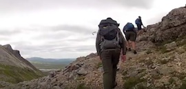
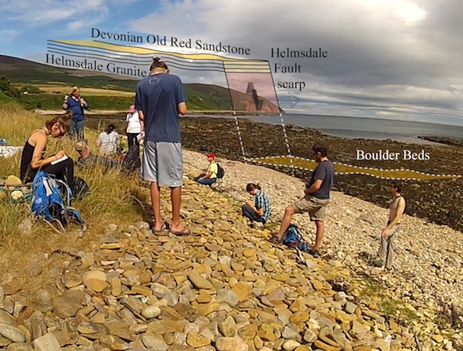

July 12-13, 2018


| VIDEOS hosted on YouTube |
Conival, 2018 Our climb of Conival (3-minute excerpt from 15-minute video, right) |
 |
Scotland, 2018 Our 2018 field trip to Scotland (15 minutes) |
| On our journeys around Edinburgh, with visits to Edinburgh Castle, Calton Hill, Salisbury Crags, and the National Muesum, all
on foot. July 12-13, 2018 |
|
| At Salisbury Crags, we discussed the
dolerite sill and its contact with underlying sandstone. July 13, 2018 |
| Part of the group also visited the Royal
Botanic Garden. July 13, 2018 |
| Angus Miller (Geowalks) guided us on the coastal
geology from Dunbar to Siccar Point. July 14, 2018 |
| On
our way to Hutton's unconformity near Newton Point, on the Isle of
Arran, we considered a small outcrop of impressively deformed Dalradian
Schist. July 16, 2018 |
| Students prepare dinner at the hostel in
Lochranza, Isle of Arran. July 16, 2018 |
| Here, we consider the significance of
serpentine in the Highland Boundary Fault at Balmaha, on Loch Lomond. July 17, 2018 |
| A group photo in front of the Black Cuillin
Hills, on the Isle of Skye. July 19, 2018 |
| Pete Harrison (Geologist, Northwest Highlands Geopark) and
yours truely at the Moine Thrust at Knockan Crag. July 20, 2018 |
| Here, Pete explains the significance of the
Moine. July 20, 2018 |
 |
| Dinner at the hostel in Inchnadamph. July 20, 2018 |
 |
| After considering the geology near
Traligill Caves, part of the group climbed Conival, one of Scotland's
munros. July 21, 2018 |
| Four hardy souls on the summit of Conival,
14:50, 21 July 2018. July 21, 2018 |
| The bartender in Inchnadamph. July 21, 2018 |
| The Helmsdale Fault and associated boulder
beds and raised marine beach deposits were impressive at Helmsdale. July 22, 2018 |
 |
| Our driver's (Joyce's) cousin gave us a
particularly impressive tour of the Culloden Battlefield. July 23, 2018 |